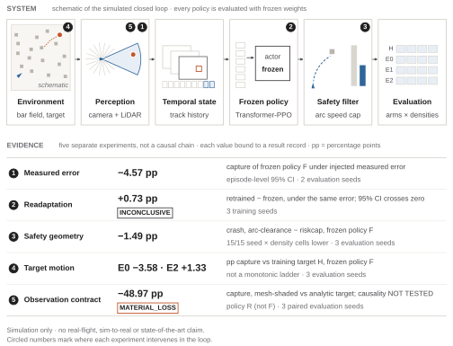
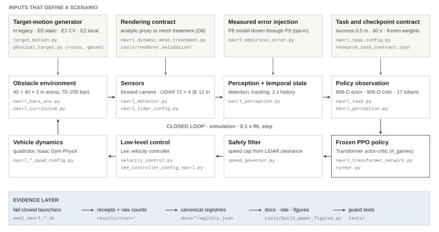
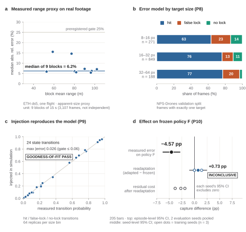
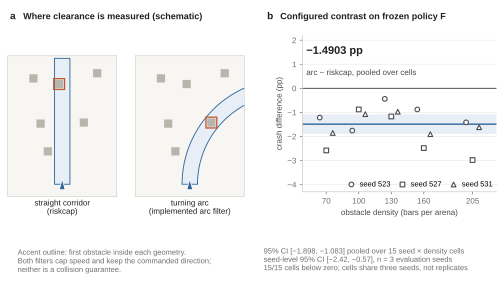
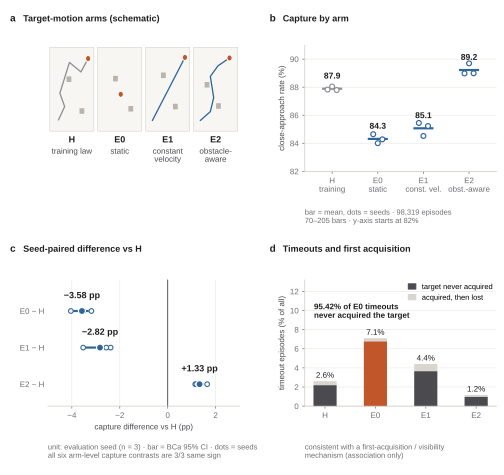
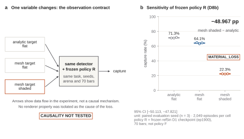

Simulation study · research software
MOTAR
Moving Object Tracking And Rendezvous
Reinforcement Learning for UAV Tracking and Close Approach in Random Obstacle Fields
MOTAR studies the full evidence chain from measured perception uncertainty to policy behaviour, safety geometry, target-motion generalization, and observation sensitivity under frozen UAV policies.
- Static target−5.37 ppE0 vs historical training target H · policy F
- Constant velocity−3.45 ppE1 vs historical training target H · policy F
- Obstacle-aware target+1.35 ppE2 vs historical training target H · policy F
Independent 7-seed bias-corrected replication · 229,376 primary episodes
Simulation only: no real-flight validation, sim-to-real or state-of-the-art claim. pp means percentage points; every value links to its record.

01
Research question
A simulated quadrotor has to find, follow and closely approach a moving object in a random field of vertical bars, using only a forward camera and a LiDAR. Published systems usually isolate one part of this problem. MOTAR evaluates frozen policies and changes one factor at a time: the perception error the policy receives, the geometry its safety filter uses, the way the target moves and the way the target is rendered. Each headline comparison has a preregistration and a result record. Two frozen checkpoints are used: policy F (ep25000 + riskcap) for perception → policy, safety geometry and target motion, and policy R (ref5in D1 ep1900) for the observation contract.
02
Key findings
| Axis | Result | Reading and limit |
|---|---|---|
| Perception error | 6.2% range error | Median of 9 block medians (15 s blocks) of the absolute relative range error of an image-size proxy. One real flight; its 3,107 frames are not independent samples. |
| Perception → policy | −4.57 pp | Capture lost by policy F under the measured error; episode-level 95% CI [−6.32, −2.82] from two evaluation seeds. |
| Readaptation | +0.73 pp | INCONCLUSIVE 95% CI [−1.04, +2.50] over three training seeds: no net benefit established. |
| Safety geometry | −1.4903 pp crash | Arc clearance vs riskcap on policy F. Seed-level 95% CI [−2.42, −0.57] over three evaluation seeds; lower in 15/15 seed × density cells, which are not independent replicates. A configured contrast, not a safety guarantee. |
| Target motion | E0 −5.37 · E2 +1.35 pp | Vs the training target H (E1 −3.45 pp). Independent bias-corrected replication on policy F: seven fresh seeds, 229,376 primary episodes; all three contrasts replicated. The obstacle-aware gain was not uniform at high obstacle density. |
| Observation contract | −48.967 pp | MATERIAL_LOSS Causality not tested. Frozen policy R, three paired evaluation seeds. |
Class A matched external comparisons: 0. Every record, interval and limit · full evidence page
03
System
A forward camera and a LiDAR feed perception, which keeps a two-second track history. A Transformer PPO policy, trained once and then frozen, maps 17 observation tokens to a velocity command. A LiDAR speed filter caps that command before a velocity controller flies the quadrotor. Ground-truth target state never enters the policy's observation. The experiments vary the scenario inputs shown on top.

04
Perception → policy
The detector error measured on real footage was replayed in simulation through a calibrated injector. It cost frozen policy F 4.57 pp of capture (an episode-level interval from two evaluation seeds). Retraining under the same error for 1,000 epochs changed capture by +0.73 pp on average. The seed-level interval spans zero, and every seed kept a residual cost.
{kind=link}

05
Safety geometry
Measuring clearance along the turning arc, instead of along a straight corridor, lowered the crash rate of policy F in each of 15 seed × density cells (pooled −1.4903 pp). The cells come from three evaluation seeds, so the seed-level interval, [−2.42, −0.57] pp, is the conservative one.
{kind=link}

06
Target motion
H is historical training-lineage motion; E0 is a static target; E1 is bounded constant velocity; E2 is bounded obstacle-aware waypoint motion. Frozen policy F was evaluated over seven fresh seeds, four densities and 112 cells. All three preregistered directional contrasts replicated. Capture rates: H 87.76% · E0 82.39% · E1 84.32% · E2 89.12%.
No target law reacts to the pursuer; obstacle-aware is not adversarial. The original campaign's first-acquisition record is consistent with a first-acquisition / visibility mechanism (association only). How each target moves · Replication record.
| Capture contrast (pp), BCa95 | Original n=3 · legacy window | Replication n=7 · per-environment quota |
|---|---|---|
| E0 − H | −3.58 [−4.04, −3.29] | −5.37 [−5.78, −4.85] |
| E1 − H | −2.82 [−3.53, −2.44] | −3.45 [−3.79, −3.11] |
| E2 − H | +1.33 [+1.15, +1.50] | +1.35 [+1.07, +1.87] |
Each contrast has exact p = 0.015625 and the same direction in 7/7 seeds. The Holm-adjusted p-values are 0.046875, at the resolution boundary of the seven-seed exact sign-flip design. Effect sizes, confidence intervals, and seed-level consistency must therefore be reported alongside the hypothesis tests.
The aggregate E2−H contrast replicated, but its positive direction was not uniformly expressed at the two highest obstacle densities: 5/7 seeds at 160 bars and 4/7 at 205 bars. Density-specific analyses remain exploratory.
Within the seven-seed replication, the historical pooled stopping window attenuated all three capture contrasts toward zero. The estimator change does not by itself explain the full difference between the original n=3 campaign and the n=7 replication because the seed sets differ.
{kind=link}

07
Observation sensitivity
Holding the detector, frozen policy R, the task and the seeds fixed, rendering the target as a shaded mesh instead of the analytic proxy cut capture by 48.967 pp (three paired evaluation seeds). Policy R is a different checkpoint from policy F.
{kind=link}

{kind=link}
09
Reproducibility and limitations
The public path runs on a CPU without Isaac Gym: an isolated renderer profile, the documentation checks, and the tests that bind every published number to its record. The GPU results are verified from their receipts rather than re-run. Mesh-shaded rendering is not the final policy observation; D8b retraining is NOT_REQUIRED_FOR_CURRENT_CLAIM. Every figure on this page is generated from those records by one script.
- Simulation only: no real-flight validation, sim-to-real transfer or deployment claim.
- The historical experiments were framed as interception; their metric names (capture, crash) keep their meaning.
- Each effect holds only inside its recorded contract: checkpoint, arena, densities, seeds. Class A matched external comparisons: 0.
- Target-motion inference uses seven independent evaluation seeds; density-specific E2 effects are exploratory.
- Minimum-distance results are WITHHELD_SEMANTIC_MISMATCH: capture tests swept closest approach within a step; the recorded distance samples step ends.
- Several raw datasets and artifacts remain outside normal Git; no full cross-machine bitwise reproducibility is established.
- Readaptation is INCONCLUSIVE. The D8b cause is NOT_TESTED. Persistent identity and metric range are BLOCKED by missing ground truth.
Measurement source: b1c0bc6; GPU evaluation requires the pinned simulator environment. Raw replication evidence is retained outside normal Git history and is not publicly downloadable. Manifest, integrity report and archive SHA.
Appendix
Interactive demonstration
BROWSER GT PREVIEW · NOT PPO EVIDENCE This browser view explains the arena and the close-approach episode. It uses exact ground-truth state for its own chase and is not a trained policy, the PhysX simulator or any measurement. None of the results above depend on it, and its display modes are browser renditions, not policy comparisons.
Interactive demonstration
Loading 3D arena…
Browser GT preview details
Browser GT Tracking Preview: exact browser target state and obstacle AABBs are used only to draw an explanatory chase. The default CLOSE-APPROACH EPISODE runs tracking → close approach → final approach and ends when the relative distance reaches the research task's success radius (swept between steps, internally recorded as CAPTURED) or when the task's episode budget elapses, then holds the outcome and starts a new episode. Those values are not browser constants: they are generated from research source into research_task_contract.json. CONTINUOUS TRACKING keeps the 1.55 m display standoff with no terminal outcome. The browser preview mirrors the task termination semantics, but is not PPO or PhysX performance evidence. This is not the PPO policy, not PhysX, not TM-E3, and not a performance measurement. Historical local-heuristic and TM-E2 routed-preview modes remain available. Click/tap the ground in CLICK GOAL to send the target; invalid clicks are rejected.